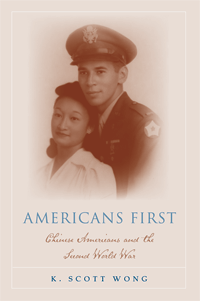

<body bgcolor="#FFFFFF" text="#000000" link="#0000FF" vlink="#CC0000" alink="#CC0000"><center><hr width="350" size="1" align="center" noshade>The Second World War's role in bringing Chinese Americans into the mainstream of American society<hr width="350" size="1" align="center" noshade><p><a href="https://cdcshoppingcart.uchicago.edu/Cart/ChicagoBook.aspx?ISBN=9781592138401&&PRESS=temple" target="_top">Buy this book!</a> | <a href="https://cdcshoppingcart.uchicago.edu/Cart/Cart.aspx?PRESS=temple" target="_top">View Cart</a> | <a href="https://cdcshoppingcart.uchicago.edu/Cart/Cart.aspx?PRESS=temple" target="_top">Check Out</a></p><p></p></center><!--none//--><h1>Americans First</h1>
<H2>Chinese Americans and the Second World War</H2>
<h3>K. Scott Wong</h3>
<P>paper 1592138403 $24.95, Feb 08, <FONT COLOR=#990033>Available</FONT>
<BR> 268 pp
5.5x8.25
</P><BLOCKQUOTE><I>"Wong's book on the experiences of Chinese Americans during World War II will not only go a long way to fill in the gaps but also challenge students to think critically about social change for Asian Americans during Word War II. He skillfully employs numerous quotes from newspaper sources and interviews to tell this complicated history of ethnic tensions and racial formation. Americans First is a terrific book for course use. By illuminating a little known area of Asian American history, the book provokes much discussion and debate."</I>
<br>&#151<b>Mary Ting Yi Lui</b>, Yale University</I></BLOCKQUOTE>
<p>During the Second World War, Chinese Americans contributed to the war effort by joining the armed forces and working in the defense industries. In doing so, they improved their social status, often at the expense of Japanese Americans, and positioned themselves to become the “model minority” and the “good Asian in the good war.”
<p>In <i>Americans First</i>, K. Scott Wong uses archival research and oral histories to provide the first detailed account of Chinese Americans in the American military. Wong traces the history of the 14th Air Service Group, a
segregated outfit of Chinese Americans sent to China in support of the
American Army Air Corps and the Chinese Air Force. His ethnic history of
inclusion shows how this new generation of Chinese Americans was more socially accepted, moving from the margins of society into the American
mainstream during a time of pervasive racism.
<BR>&nbsp;<h2>Excerpt</h2><P>Excerpt available at <a href="http://www.temple.edu/tempress">www.temple.edu/tempress</a></p>
<BR>&nbsp;<h2>Reviews</h2>
<p><i>"</i>Americans First<i> is an outstanding synthesis of firsthand accounts and nuanced historical analysis. At once soulful and impeccably researched, we can now recognize a generation of Americans missing from our history."</i>
<br>&#151<b>John Kuo Wei Tchen</b>, New York University
<p><i>"</i>Americans First<i> breaks new ground by shifting our focus from Chinese
immigration and exclusion in the nineteenth century to the beginnings of Chinese American inclusion during World War II."</i>
<br>&#151<b>Judy Yung</b>, author of <i>Unbound Feet: A Social History of Chinese Women in San Francisco</i>
<p><i>"</i>Americans First<i> explores the impact of World War II on Chinese Americans. As one of the relatively few scholarly treatments of the Chinese American experience during this time period, it provides a welcome addition to Asian American history. The book, filled with lively oral histories, is informative." </i>
<br>&#151<b><i>Journal of American History</i></b>
<p><i>"</i>Americans First<i> is insightful, beautifully written and highly readable from beginning to end.... an excellent reference for anyone interested in Asian American history, US-China relations, identity politics and migration studies." </i>
<br>&#151<b><i>The Journal of Chinese Overseas</i></b>
<p><i>"[Wong] nicely details the complex and multifaceted experiences of the Chinese American community in a book which is well organized and approachable and quite readable throughout.... </i>Americans First<i> [is] well-written and [an] important addition to the existing oral history literature on the Chinese American experience during the World War II era." </i>
<br>&#151<b><i>Oral History Review</i></b>
<BR>&nbsp;<h2>Contents</h2><P>
<br>Introduction
<br>1. Chinese America before the War
<br>2. Chinatown Goes to War
<br>3. The "Good Asian" in the "Good War"
<br>4. Hawai'i's Local Warriors
<br>5. The Fourteenth Air Service Group
<br>6. Into the Mainstream
<br> Appendix: Employment Tables
<br>Notes
<br>Acknowledgements
<br>Index
</P><BR>&nbsp;<H2>About the Author(s)</H2>
<table><tr><td valign="top"><img src="/tempress/authors/1976_au.gif" height="90" width="75"></td><td width="100%" valign="middle"><p><b>K. Scott Wong</b> is James Phinney Baxter III Professor of History & Public Affairs at Williams College.</P></td></tr></table>
<BR><H2>Subject Categories</H2>
<p><A HREF="/tempress/asian_amer.html" TARGET="_top">Asian American Studies</a>
<BR><A HREF="/tempress/american.html" TARGET="_top">American Studies</a>
<BR><A HREF="/tempress/race.html" TARGET="_top">Race and Ethnicity</a>
</p>
<BR><h2 class="inpageheading">In the series</H2>
<P><I><a href="http://www.temple.edu/tempress/asam_history.html" onMouseOver="window.status='Click for other books in this series!'; return true;" onMouseOut="window.status=''; return true;" target="_top">Asian American History and Culture</a></i>, edited by K. Scott Wong, Linda Trinh Võ, and Cathy Schlund-Vials.
</p><p>Founded by Sucheng Chan in 1991, the <I>Asian American History and Culture</I>, series has sponsored innovative scholarship that has redefined, expanded, and advanced the field of Asian American studies while strengthening its links to related areas of scholarly inquiry and engaged critique. Like the field from which it emerged, the series remains rooted in the social sciences and humanities, encompassing multiple regions, formations, communities, and identities. Extending the vision of founding editor Sucheng Chan and emeriti editor Michael Omi and David Palumbo-Liu, series editors K. Scott Wong, Linda Trinh Võ, and Cathy Schlund-Vials continue to develop a foundational collection that embodies a range of theoretical and methodological approaches to Asian American studies.</p>
<p align="center"><a href="https://cdcshoppingcart.uchicago.edu/Cart/ChicagoBook.aspx?ISBN=9781592138401&&PRESS=temple" target="_top">Buy this book!</a> | <a href="https://cdcshoppingcart.uchicago.edu/Cart/Cart.aspx?PRESS=temple" target="_top">View Cart</a> | <a href="https://cdcshoppingcart.uchicago.edu/Cart/Cart.aspx?PRESS=temple" target="_top">Check Out</a></p><p><font face="Arial" size="1"><a href="copyright.html" onMouseOver="window.status='Web Copyright Policy';return true;" onMouseOut="window.status=''" title="Web Copyright Policy">&copy;</a> 2015 <a href="http://www.temple.edu" target="new" onMouseOver="window.status='Link to Temple University home page';return true;" onMouseOut="window.status=''" title="Link to Temple University home page">Temple University</a>. All Rights Reserved. http://www.temple.edu/tempress/titles/1976_reg.html</font></p>